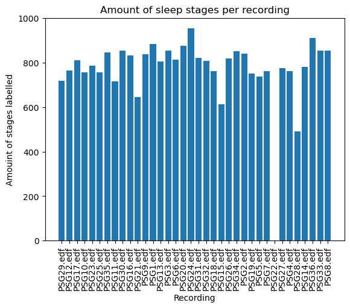
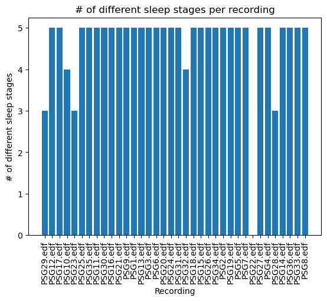

import os
from glob import glob
from collections import Counter
from typing import List, Dict
from rich.progress import track
import numpy as np
import pandas as pd
import mne
import yasa
from sleepstagingidal.data import *Sanity check
Before jumping into training models with the data, it’s a good practice to check the health of the data we are going to be working with.
Distribution of labels per patient
As we saw while we were loading the data, there might be some recordings that don’t have the full set of labels we are interested in. To account for this, we are going to obtain the label distribution per recording to be able to differentiate between fully labelled recordings and non-fully labelled recordings.
When going further in our analysis, it can be important to filter out the non-fully labelled recordings, at least, until we have a full working pipeline we are happy with.
The steps we have to follow are:
- Load the raw
.edffile. - Extract transform the
AnnotationsintoEventsand filter them using regex.
path_files = glob(os.path.join(path_data, "*.edf"))raw = mne.io.read_raw_edf(path_files[0], preload=False)Extracting EDF parameters from /media/2tbraid/antonia/PSG/PSG29.edf...
EDF file detected
Setting channel info structure...
Creating raw.info structure...events, events_id = mne.events_from_annotations(raw, regexp='Sleep stage [A-Z]\d*')Used Annotations descriptions: ['Sleep stage N1', 'Sleep stage N2', 'Sleep stage W']When obtaining events from annotations, the annotations are encoded in sparse notation. To ease our analysis we can define a couple of functions to turn them back easily into human readable format again:
swap_dict
swap_dict (dictionary:Dict)
Turns the keys into values and the values into keys.
| Type | Details | |
|---|---|---|
| dictionary | typing.Dict | dictionary to be swapped, |
| Returns | typing.Dict | Swapped dictionary |
map_events
map_events (events, mapping:Dict)
Turns an encoded representation of the annotations into a human readable one using the corresponding mapping dictionary
| Type | Details | |
|---|---|---|
| events | events array obtained from mne.events_from_annotations(). |
|
| mapping | typing.Dict | dictionary mapping from encoded annotations to readable. |
| Returns | typing.List[str] | mapped events in human readable format. |
assert len(events[:,-1]) == len(map_events(events, swap_dict(events_id)))To wrap it up, let’s define a function that takes as input a path to a file and outputs its event annotations in human readable form:
get_sleep_stages
get_sleep_stages (path:str, verbose:bool=False)
Loads an .edf file and extracts the sleep stage labels in human readable form.
| Type | Default | Details | |
|---|---|---|---|
| path | str | Path to an .edf file. |
|
| verbose | bool | False | Amount of information shown when loading the file. |
| Returns | typing.List[str] | annotations in human readable form. |
sleep_stages = get_sleep_stages(path_files[0])
assert len(sleep_stages) == len(events[:,-1])Once we have all the interest labels from a file extracted, we can use a Counter to obtain its distribution:
Counter(sleep_stages)Counter({'Sleep stage W': 367, 'Sleep stage N1': 29, 'Sleep stage N2': 323})Amount of sleep stages per patient
The main thing we want to check is the amount of different labels that are present in each file: We expect each file to have 5 sleep stages (W, N1, N2, N3, R). This will be an easy thing to obtain using the functions we have previously defined:
path_files[0].split("/")[-1]'PSG29.edf'all_sleep_stages = {}
for path_file in track(path_files):
file = path_file.split("/")[-1]
sleep_stages = get_sleep_stages(path_file)
all_sleep_stages[file] = sleep_stagesNow that we have all the stages per recording, we can obtain:
- Quantity of stages per recording.
- Number of different stages per recording.
all_quantity = {file:len(stages) for file, stages in all_sleep_stages.items()}plt.figure()
plt.bar(all_quantity.keys(), all_quantity.values())
plt.xticks(rotation=90)
plt.title("Amount of sleep stages per recording")
plt.xlabel("Recording")
plt.ylabel("Amouint of stages labelled")
plt.show()
all_different = {file:len(set(stages)) for file, stages in all_sleep_stages.items()}plt.figure()
plt.bar(all_different.keys(), all_different.values())
plt.xticks(rotation=90)
plt.title("# of different sleep stages per recording")
plt.xlabel("Recording")
plt.ylabel("# of different sleep stages")
plt.show()
Summing up
Thanks to this easy and quick exploration we have been able to recognize that the file PSG22.edf might have a problem because no stages are shown, and that files PSG29.edf, PSG10.edf, PSG23.edf, PSG32.edf and PSG28.edf might be problematic because they are missing some of the labels we are interested in. We can end this by creating a, for example, .csv file indicating the files that are completed and the ones that are not, so that we can choose which to load depending on what analysis we want to perform on our data.
df = pd.DataFrame.from_dict(all_different, orient='index', columns=['DifferentStages'])
df.index.set_names("File", inplace=True)
df["Complete"] = df.DifferentStages == 5
df.head()| DifferentStages | Complete | |
|---|---|---|
| File | ||
| PSG29.edf | 3 | False |
| PSG12.edf | 5 | True |
| PSG17.edf | 5 | True |
| PSG10.edf | 4 | False |
| PSG23.edf | 3 | False |
df.to_csv("info.csv")